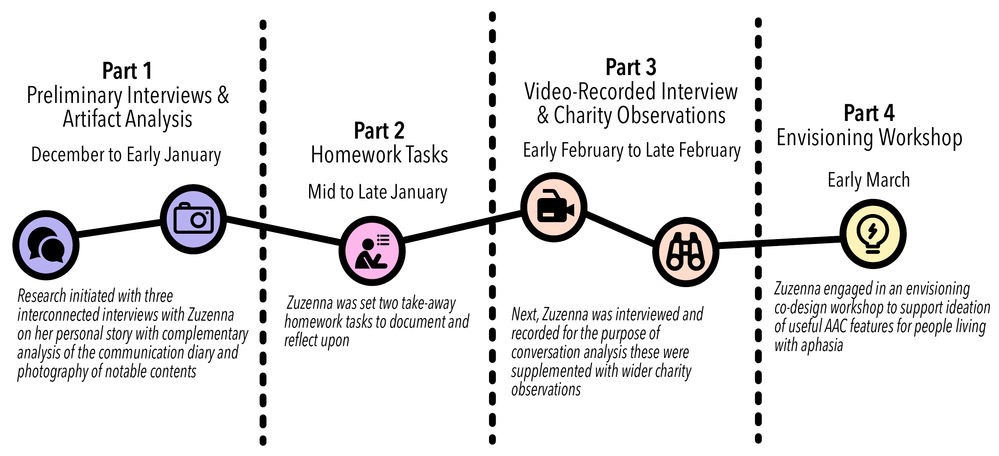
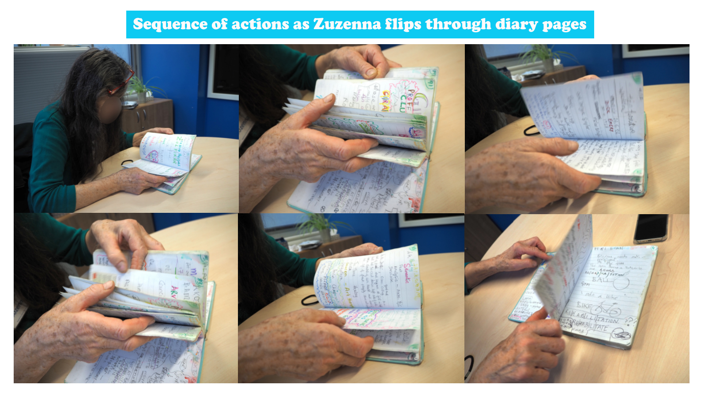
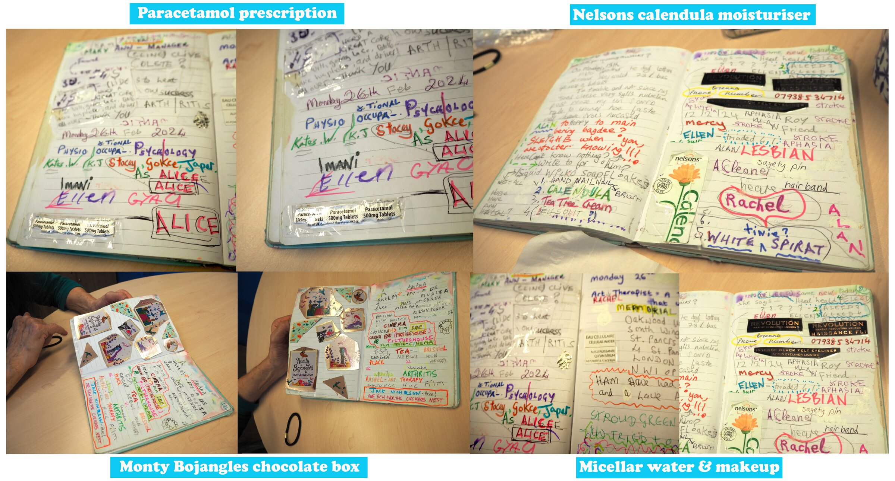
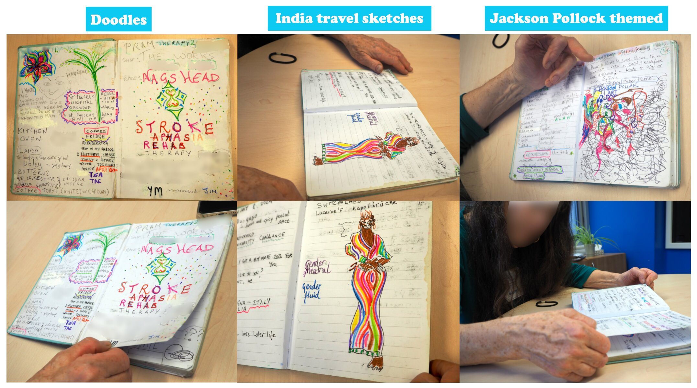
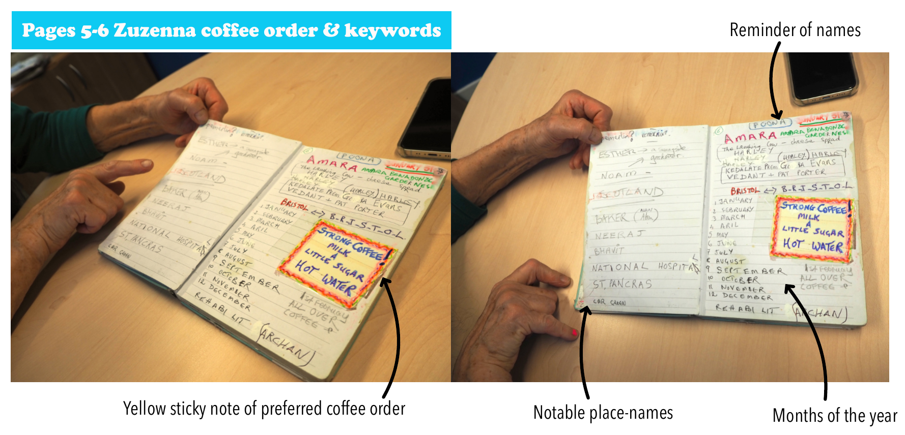
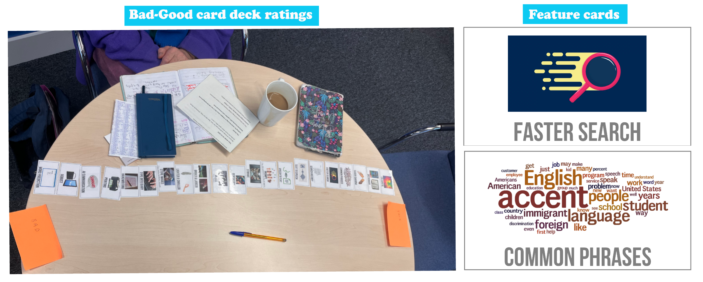

Zuzenna's Diary
Despite their potential, most augmentative and alternative communication (AAC) technologies are widely abandoned — particularly among people living with aphasia. Barriers are well documented: complex personalisation, social stigma, and devices costing thousands of pounds that presume an ability to pay. Critics have long argued that AAC reflects top-down, medicalised models shaped by ableist assumptions and commercial agendas rather than lived experience.
Zuzenna is a stroke survivor living with aphasia — and an outlier. Rather than abandoning AAC, she created her own. Conceived in a hospital ward from a friend's suggestion, her self-made communication diary is a bespoke, organically evolving tool: not a prescribed device, but a creative and deeply personal artefact that grew from her own imagination, materials and needs. Photographs, cut-outs, hand-drawn symbols, ticket stubs, pressed flowers, memorabilia — built entirely on her own terms.

This is a four-month qualitative study of that diary — conducted December 2024 to March 2025 — drawing on conversation analysis, video footage, photography and an envisioning workshop. Monthly sessions analysed how Zuzenna used the diary across a range of everyday scenarios: ordering coffee, navigating medical appointments, storytelling, advocacy. Video recordings allowed close analysis of moment-by-moment interaction — how the diary was held, turned, pointed at; how searching for a word naturally slowed the pace of conversation, signalling her communication partner to pause without Zuzenna needing to say a word.


The diary was not a static object. It was added to, rearranged, annotated and re-used across sessions. Pages recorded therapy contacts and hospital ward names alongside music recommendations, jazz nights, the names of friends and places she had travelled. Crucially, the diary is non-stigmatising: to the uninitiated observer, it appears as nothing more than a notebook. This unobtrusive presence allows it to blend naturally into social environments — supporting communication without drawing unwanted attention.


Photography documented the material qualities of the diary in detail — the improvised fixings, the layering of media, the way colour and scale signal meaning. In the envisioning workshop, Zuzenna ranked colourful as the most important AAC feature. The visual record reveals design decisions that are hard to articulate verbally: writing certain words very large, boxing and decorating others, leaving some pages sparse and others densely annotated. The diary's material qualities generate intrigue and readily initiate conversations — its familiar book format inviting communication partners to explore its contents and ask questions, with Zuzenna confidently positioned as the storyteller.



Analysis identified three core themes. First, fostering communion: the diary is shareable in a way that commercial AAC devices are not — it can be physically handed to others, acting as a conversation starter, piquing curiosity and inviting tangible participation. Second, expression and agency: Zuzenna insisted on absolute authority over every aspect of the diary. In the envisioning workshop she firmly rejected printing or duplicating entries — repeatedly emphasising its "very personal" nature. This contrasts sharply with standard AAC prescription, where professionals often edit devices without the user's awareness. Third, valuing personal labour and supporting growth: the diary's pages trace the arc of her recovery — from early entries ordering coffee the way she prefers, to letters composed with speech and language therapists advocating for improved public housing in her borough. This extensive labour is clearly visible in the diary itself. We caution against AI-driven AAC systems that risk erasing this — reframing users' entries according to algorithmic assumptions rather than preserving their individual voice.



Zuzenna's diary reveals that AAC does not have to be techno-centric or expensive to be powerful — it just needs to be personal. The paper was presented at ASSETS 2025 in Denver, where it received broad engagement from the accessibility research community. The video figure below was shown as part of the presentation.